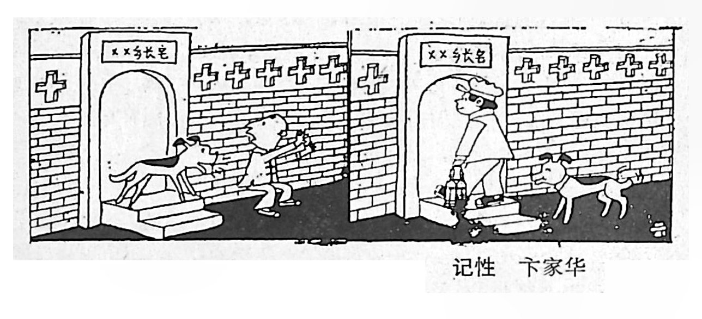

卞家华 《人事》1988年第11期（总第38期），第40页
记性
Memory
- Text in the drawing
- ××乡长宅 (×2)
Residence of Township Head XX (×2) - Description
- Two panels at the gate of a township head's house: a visitor who comes empty-handed is driven back by the barking dog; a visitor carrying bottles of liquor strolls in while the dog wags its tail.
- Note
- The dog has learned which visitors bring gifts.
- Artist
- Bian Jiahua 卞家华
- Published in
- 《人事》1988年第11期（总第38期）, p. 40
- Themes
- Gifts and banquets · Connections (guanxi)

Cite
Bian Jiahua, “记性” [Memory], Renshi (Personnel) 《人事》, 1988, no. 11, p. 40.